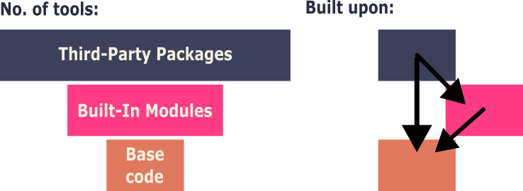

Learning Objectives
Introduction
One of the biggest benefits of Python is the extensive ecosystem of additional code modules you can import to process your data. Due to Python's popularity, there are many of these modules available, some come pre-installed with Python, whilst others need to be installed separately. In Python, these are called modules (single files) or packages (collections of modules), though they're often also referred to as libraries in Python, as well as in other programming languages.
We will explore some theory about these terms, where to source external packages from, and the correct way to import them (load them into your Python workspace).
Module: A single Python file containing code (functions, classes, variables) that can be imported and used in other Python programs.
Package: A collection of related modules organised in a directory structure, allowing for hierarchical organisation of code and functionality.
Import: A Python statement that loads modules or specific functions from modules into your current program, making their functionality available for use.
What is a module?
A module is simply a Python file containing code that you can use in other Python programs. It acts as a toolbox from which you can select the appropriate script for tasks that you perform, repeatedly. These tools often take the form of functions (a named block of code that carries out a specific task - whenever these are called.
Any Python file with a .py extension is termed a module. For instance, if you were to create a file called calculator.py with various mathematical functions inside it, that file then becomes a module called calculator. You can then import that file into another .py file or a Jupyter notebook, where you can make use of it.
Modules can contain more than just functions, however. They can also include:
- Classes - blueprints for creating objects (explained further below)
- Variables - data that you want to reuse
- Executable statements - code that runs when the module is first imported
A python class is a blueprint for creating objects in Python. This blueprint will often include with its own associated methods/functions, attributes and behaviours. You are likely already making extensive use of classes, without realising it. Lists, strings, integers and dictionaries are all classes (as well as being data types and structures), and when you create my_list = [1, 2, 3, 4], you're creating an instance of the list class. This is why we use the term instantiate - you are creating a fresh instance of a class, when you define a data structure or variable containing a class such as a list. The fact that you are creating a fresh instance of this class, loaded with your specified data values, is why these objects come with a plethora of built-in methods such as .append() or .upper(), that you can make use of straight away.
In the previous example we are importing a module from a file that we created, but this can be extended to modules others have written, or those included with Python. We will cover the difference between the two in a section below (Base Python).
The key benefit of modules is code reusability. Instead of copying and pasting the same code across multiple projects, you write it once in a module and import it wherever it's needed, to be used as often as required.
What is a package?
A package is a collection of related modules organised together in a directory structure. Whilst you could have every function or class within one module, it is better practice to organise closely-related functions in one file (module). These can then be called into other modules when needed.
A package should still retain an overarching theme. For example, a package called data_analysis could contain separate modules for statistics, plotting and data cleaning.
A package is quite simple: it is effectively a directory (folder) that contains:
- Multiple Python modules (
.pyfiles) - A special file called
__init__.py, which tells the Python interpreter it is a package
An example structure:
data_analysis/
__init__.py
statistics.py
plotting.py
cleaning.pyPackages make Python's ecosystem scalable, as developers can create large (hopefully) well-organised libraries that can be imported to extend the capabilities of Python. We will demonstrate how to import both single modules and packages, next.
Base Python
Up until this point, we have only been using the coding language that is part of base Python, with no need to import any tools as what we have required up to this point, is already there. These tools that you learned can be considered the fundamental syntax and semantics of the Python language, enabling an algorithmic approach to programming. These make up the base, from which more complex things can be built.
On top of this, there are also many more modules of code that come as part of the standard distribution of Python, known as built-in modules. These extend the standard capability of Python. Some of them were built by the developers of Python, and some were built by others, and later incorporated into the standard distribution due to their ubiquitous use. There are now over 200 modules in the standard distribution of the Python language.
After the built-in modules, you have the third-party modules/packages. These have to be installed using a package manager (these are covered in our Python Orientation materials), with the standard manager being pip. We'll run through common third-party packages and how to install them later in this section.
Base Python: The core Python language including fundamental syntax, data types (strings, lists, dictionaries, etc.), control structures (if / else, loops), and basic built-in functions like print(), len(), and type(). This is what's immediately available when you start Python without importing anything.
Built-in Modules: Additional modules that come pre-installed with Python as part of the standard library, but must be imported to use. Examples include math, datetime, and os. These extend Python's capabilities without requiring separate installation.
Third-party Modules: Packages created by external developers that must be installed, separately (typically using pip), before they can be imported. Examples include pandas, numpy and matplotlib. These provide specialised functionality for specific fields such as data science, web development, and machine learning.
Why are they not all available in base Python straight away?
When you start up a Python environment, only the core language syntax and essential built-in functions are loaded into memory. Additional functionality is kept separate in modules and packages. This approach keeps Python lightweight and fast to start, rather than loading every possible tool at once (which would slow down startup), you only import the specific modules needed for your particular task. This modular design means that you achieve quick startup times, whilst still having access to Python's extensive functionality, when required.
Python's standard library is very extensive, offering a wide range of facilities. Many of these built-in modules are written in C: a much faster and more efficient (but difficult-to-write) language. This means that these tools will be faster than anything you write in Python for the same task. Additionally, they can provide access to system functionality such as file I/O that would otherwise be inaccessible to Python programmers.
Python Library Hierarchy

Import Statements
To use code from a module or package, you need to tell Python to load it using an import statement. The statement itself is very simple, using the name of the package or module to guide the interpreter to the file location.
The basic syntax is:
This import statement will always go at the top of your .py file or your Jupyter notebook, by convention, even if you aren't using the imported code until much later.
See the later subsection Good Practices
Once imported, you can use functions from that module by prefixing them with the module name and a dot:
This dot notation makes it clear which module each function comes from, helping to avoid confusion when different modules might have functions with the same name.
Importing local modules
The above example module math is one of the built-in modules in Python. If you want to import one of your own modules, it is done in the same way. All you need to do is make sure the .py file is saved in the same directory you're working in (termed the working directory).
working_folder/
my_module.py
my_notebook.ipynbWhen you write an import statement, Python searches the following, in this order:
- Current directory
- Standard library directory (built-in modules)
- Site-packages directory (third-party modules)
You can therefore have a local file called math.py in your current directory, and it will be imported instead of the built-in math module.
Different ways to import
We can also add in some operational words that indicate specific rules for the import (such as importing only one module or function).
Python offers several ways to import code, each with different use cases:
1. Basic import
2. Import with alias
You can change the name given to your import to that of an alias, using the keyword as.
Typically, the above is used when the package or module has a long name. A common example is matplotlib - a plotting package that we will be using frequently in the Data Handling module of our course, and beyond. It is conventionally imported, as follows:
3. Import specific functions
When you only need a few functions, it can sometimes be cleaner to only import these, as opposed to importing an entire package. This can be done, as follows:
4. Import all (not recommended)
Using an asterisk * after a package or module name in an import statement, imports all the functions within it, without needing to use the module name. This is not recommended as it can cause naming conflicts, often overwriting existing functions, which will produce errors or just making the code harder to read.
5. Import from packages
Packages have sub-modules, and sometimes you just need a function from one or just the module itself. For this we use the . notation after the package name, followed by the module name.
Common built-in packages
Python's standard library includes over 200 modules covering common programming tasks. Here are some you'll encounter frequently:
File and system operations
os- Operating system interface (file paths, directories)sys- System-specific parameters and functionspathlib- Modern path handling (preferred over os.path)
Date and time
datetime- Working with dates and timestime- Time-related functions and formatting
Mathematics
math- Mathematical functions (sqrt, sin, cos, etc.)random- Generate random numbers and make random selectionsstatistics- Statistical functions (mean, median, mode)
Data processing
json- Reading and writing JSON datacsv- Reading and writing CSV filesre- Regular expressions for pattern matching
Common third-party packages
Beyond the standard library, Python has an enormous ecosystem of third-party packages.
Here are a few we will be using in later lesson modules:
Data science and analysis
pandas- Data manipulation and analysis (think Excel but more powerful)numpy- Numerical computing with arrays and matricesmatplotlib- Creating plots and visualisationsseaborn- Statistical data visualisation (built on matplotlib)scipy- Scientific computing and statistics
Machine learning
scikit-learn- Machine learning algorithmstensorflow- Deep learning frameworkpytorch- Deep learning framework
Pip installing
The package manager pip is the standard way to install new packages via the internet. To find out the right way to install them you will need to head to their documentation site or PyPI (the Python Package Index) to find out the right nomenclature for the install name.
Packages are typically installed into your environment through the terminal, which changes depending on your OS. See PF0 for more details.
You can install a package one at a time:
pip install matplotlibOr install multiple in sequence:
pip install pandas numpy scipyIt is recommended to make a new environment (an isolated installation of Python) before installing packages to keep things tidy. Many packages require specific versions of others, and so installing something new may override the needs of an earlier install. If you were to run the above in your terminal these packages would be installed to your system-wide version of Python. In comparison, a new environment will be contained and usually limited to one project.
For this reason many use more intelligent package managers, such as Anaconda or UV. We cover these also in the course's Python Orientation materials and will go into them in more detail in a dedicated 'Developers' Best Practices' resource.
Good practices
It doesn't matter where you write your import statements, as long as they are before the use of the imported function. That being said, there are some good practices to bear in mind.
Import location
Firstly, all imports should be at the top of a file or the first cell in a notebook. This is the most important one for legibility. Secondly, many group their imports by import type: the first being built-in packages, the second being third-party packages, and lastly, local imports.
Use standard aliases
Many packages have conventional abbreviations for their alias. Use them so that your code is readable to others and easier to compare when fixing bugs.
Common aliases:
Be specific with imports
If you are only using a handful (1-5) functions from a package, consider only importing them specifically, rather than the whole module. The exception here is when an imported function's name would overwrite a standard function.
Whilst it is good practice to only import the functions you need, it does not save you any memory or time. This is because Python loads the entire module into memory regardless of which parts you import. When you write from math import sqrt, Python still loads the complete math module behind the scenes - you're just choosing which names to make directly accessible in your namespace.
Be safe
Use well-established packages from PyPI (the Python Package Index) rather than unknown sources. Popular packages with thousands of downloads and active maintenance are generally safer choices.
PyPI scans packages for known malware and has implemented security measures like requiring two-factor authentication for popular packages. Installing directly from GitHub or other sources bypasses these protections and increases your risk of downloading malicious code.
Also watch your spelling carefully: malicious actors often create packages with names similar to popular ones (called "typosquatting").
Summary
In this lesson we've covered modules and packages: how they are incorporated in the Python ecosystem and how they are best used.
Packages are a core concept in Python (and other languages), so using them properly is an essential skill. Remember, you don't need to reinvent the wheel. If someone else out there has coded something you're looking to do and it is well regarded, then use that and build upon it.